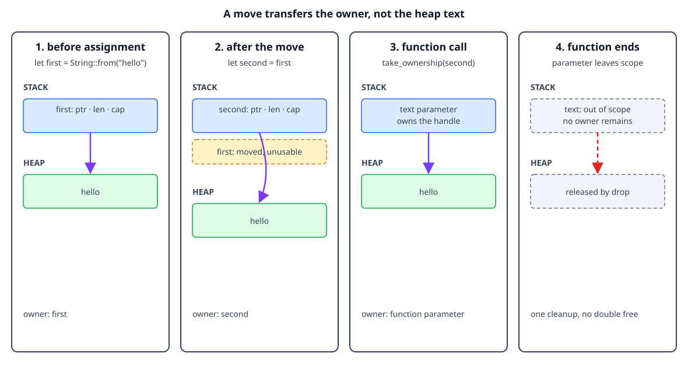

Move semantics
By the end, you will be able to
- Predict when assigning a heap-backed value moves ownership.
- Explain why the old variable cannot be used after a move.
- Recognize ownership transfer into and out of functions.
- Read a moved-value compiler error as useful design feedback.
The intuition: one owner, one cleanup
For a heap-backed value such as String, the variable contains a small handle
that points to data on the heap. If Rust copied that handle during assignment,
two variables could try to release the same allocation. Rust avoids that
problem by moving ownership: the destination becomes the owner and the source
binding is no longer usable.
let first = String::from("hello");
let second = first; // ownership moves from `first` to `second`
println!("{second}");
Checkpoint 1
What happens to first after let second = first when the value is a String?
The text is not copied by this assignment. The String handle and its heap
allocation now belong to second. The compiler rejects this because first is
no longer an owner:
// println!("{first}");
This is a compile-time rule, so the program cannot accidentally use a moved value or free its allocation twice.

The diagram is conceptual: it shows ownership and pointers, not literal addresses or the exact allocator representation.
Compiler errors are ownership feedback
When the compiler reports borrow of moved value, read it as a short ownership
history. It means:
- A value had an owner.
- An operation moved ownership somewhere else.
- Later code tried to use the old binding.
Here is a deliberately tricky example. The println! looks harmless because
it only reads title, but reading still requires the binding to be valid:
fn main() {
let title = String::from("Rust ownership");
let archived_title = title; // The String moves to `archived_title`.
println!("archived: {archived_title}");
println!("current: {title}"); // Error: `title` was moved above.
}
The compiler rejects the whole program before it runs. This matters because a
use-after-free would otherwise be a runtime memory-safety bug: the old binding
could point at storage that another owner already released. Rejecting the code
at compile time means every execution of the compiled program follows a valid
ownership path, without adding a runtime ownership counter for ordinary
String values.
The diagnostic usually points to both sides of the story:
error[E0382]: borrow of moved value: `title`
--> src/main.rs:6:29
|
3 | let archived_title = title;
| ----- value moved here
...
6 | println!("current: {title}");
| ^^^^^ value borrowed here after move
Checkpoint 2
What does borrow of moved value: title tell you?
The fix is to choose the intended ownership design. Use the new owner:
println!("current: {archived_title}");
Or make an explicit independent copy when both values must own their data:
let archived_title = title.clone();
println!("current: {title}");
println!("archived: {archived_title}");
clone() is an explicit heap-data copy, so it has a cost and communicates a
different design from a cheap move of the String handle.
Moving into and out of functions
Passing an owned value to a function uses the same rule. The function becomes the owner for the duration of the call, then drops the value when its parameter leaves scope:
fn take_ownership(text: String) {
println!("inside function: {text}");
} // `text` is dropped here
let message = String::from("hello");
take_ownership(message);
// `message` cannot be used here because ownership moved into the function.
Checkpoint 3
What does take_ownership(message) do?
If the caller needs the value afterward, the function can return ownership:
fn give_back(text: String) -> String {
text
}
let message = give_back(String::from("hello"));
println!("{message}");
Checkpoint 4
Why can the caller use the result of give_back?
Returning ownership works, but borrowing is often a better fit when a function only needs temporary access. The next lessons build on this distinction.
Complete runnable example
The lesson displays the same source file used by the matching demo:
fn take_ownership(text: String) {
// `text` is the owner inside this function.
println!("inside function: {text}");
} // `text` leaves scope, so Rust drops the String here.
fn give_back(text: String) -> String {
// The function receives ownership and returns it to its caller.
text
}
fn main() {
let first = String::from("hello");
let second = first; // Move the String handle and heap allocation to `second`.
// `first` cannot be used here: it no longer owns the String.
println!("after move: {second}");
take_ownership(second); // Move ownership into the function.
let returned = give_back(String::from("ownership returned"));
println!("returned: {returned}");
}
Run it from the repository root:
rustc examples/02-ownership-and-borrowing/02-move-semantics/main.rs \
-o /tmp/rust-move-semantics
/tmp/rust-move-semantics
Expected output:
after move: hello
inside function: hello
returned: ownership returned
Exercise: read the compiler message
- Uncomment
println!("{first}");afterlet second = first. - Compile the program again.
- Find the line that says
borrow of moved valueoruse of moved value. - In the diagnostic, identify the line marked
value moved hereand the line markedvalue borrowed here after move. - Restore the working version, then change
take_ownershipto return theStringand assign the returned value back to a variable.
The compiler error is telling you that the ownership story in the code is incomplete: decide whether the function should consume the value, return it, or borrow it.
Checkpoint 5
Why does Rust move a String instead of silently copying it during assignment?
Next
Continue with Copy and Clone to learn why integers
behave differently from String during assignment.